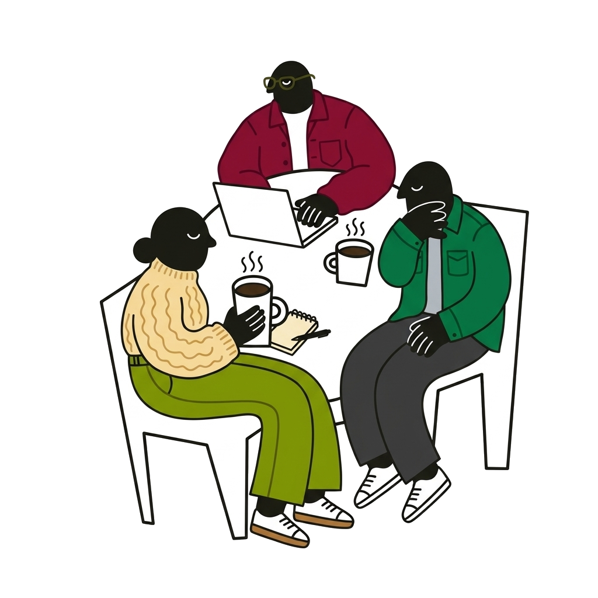

Specialise for
charity
- Support a cause you care about
- 100% of every donation reaches your charity
- Share what you know, on your own terms

100% of every donation reaches the charityDapperowl never touches the moneyFirms donate straight to your chosen charity
Dapperowl connects people who know their field inside out with organisations that need that knowledge. A firm asks for your time, and if you believe you have the expertise, you can accept. Once you have helped the firm, they donate straight to the charity you choose. No contracts, no selling yourself: just your expertise, put to work for a cause you care about.


Proud to have shared what I know about Scottish seaweed farming, and that £500 went straight to Loch Broom Lifeboat Fund.
Once your charity confirms it has received the donation, we make you an official certificate of impact, ready to post on LinkedIn in one click.
It shows your photo, your name, the amount and your charity, so your network can see the good your knowledge has done. The firm stays anonymous unless it chooses to be named.

Looking to find an expert instead? Search our experts →